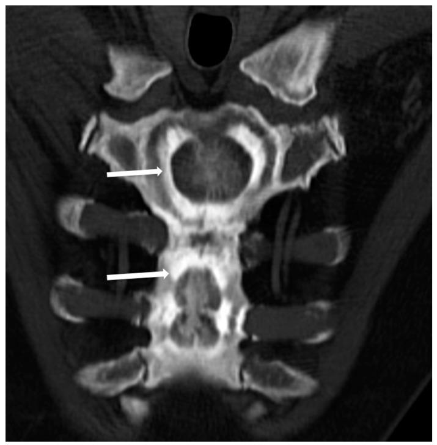
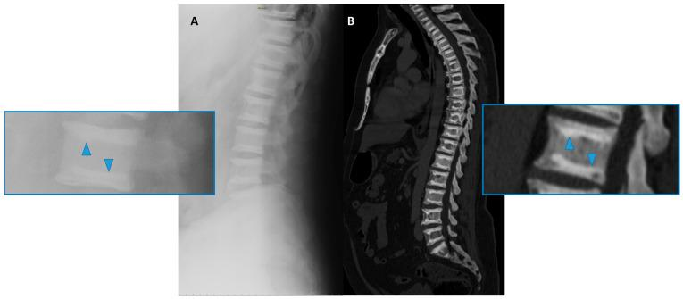
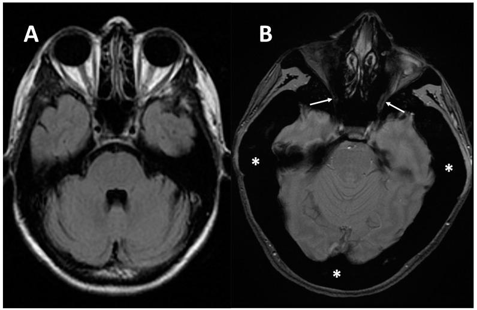
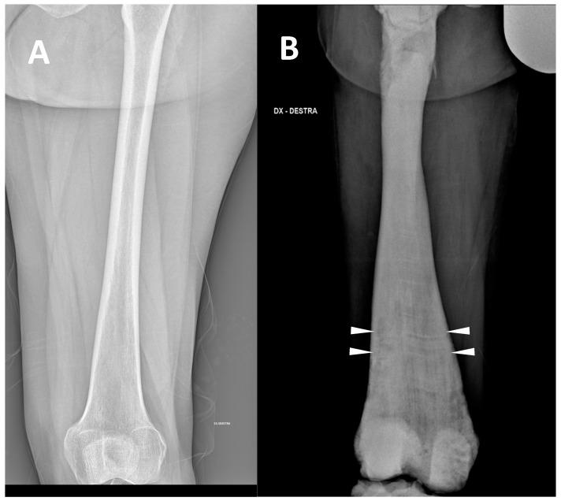
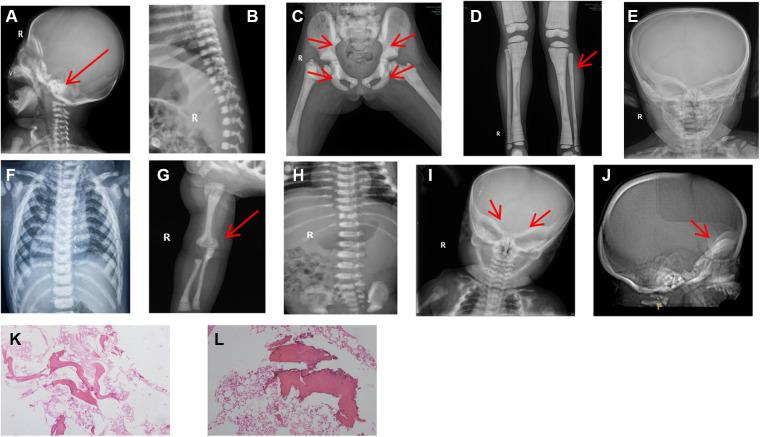
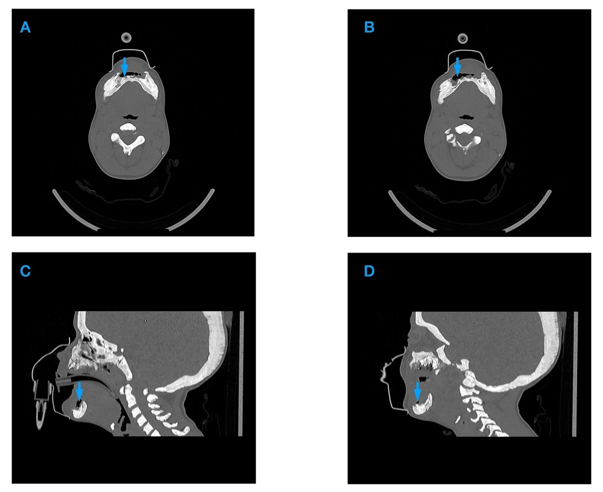
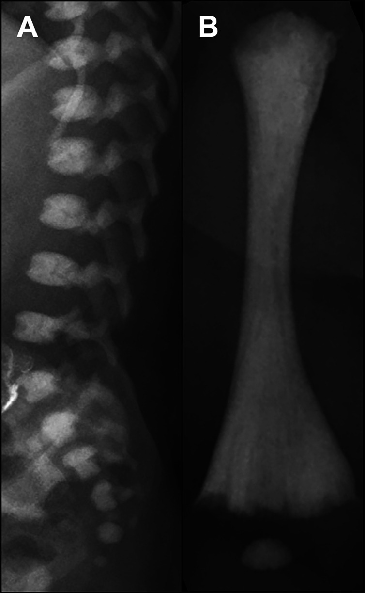

6134 — Bệnh xương cứng di truyền (osteopetrosis) ở trẻ: xương đặc lan tỏa, mất tủy xương, chèn ép thần kinh & hoại tử hàm / Osteopetrosis in children
Tags: pattern:dac-xuong pattern:bone-in-bone pattern:sandwich-vertebrae pattern:mat-tuy-xuong pattern:hoai-tu-xuong-ham vung:co-xuong vung:so-mat vung:xuong-ham score:ADO-type protocol:X-quang-xuong-dai protocol:CT-xuong protocol:MRI-tuy-xuong incidentaloma:dac-xuong
Mức chắc chắn (certainty): tổng hợp y văn (literature synthesis) — ghép tổng quan cơ chế/dịch tễ (Penna S, Villa A, Capo V. Dis Model Mech 2021;14:dmm048940, PMC8188884), phổ hình ảnh theo kiểu di truyền (Spinnato P et al., Genes 2022;13:1965, PMC9689876), ca hoại tử hàm ở trẻ (Matysek J et al., Cureus 2026;18(9):e116923, PMC13696059), loạt 33 trẻ của Trung Quốc (Chen Y et al., Front Pediatr 2023;11:1096770, PMC10043213), so sánh xơ xương sơ sinh thoáng qua với thể ác tính (Ackah SA et al., Bone Rep 2025;27:101885, PMC12639257), loạt nội tiết 17 trẻ (Gök E et al., Front Endocrinol 2026;17:1854949, PMC13518210) và tổng quan sọ–mặt–răng (Ma Y et al., Int J Mol Sci 2023;24:10412, PMC10299715).
Điểm chốt của bài: osteopetrosis không phải "xương chắc" mà là xương đặc nhưng giòn, không có tủy, và các lỗ thần kinh bị bít. Trên phim, chốt là mất phân biệt vỏ–tủy lan tỏa + bone-in-bone/sandwich vertebrae; trên lâm sàng, chốt là thiếu máu – giảm tiểu cầu + chèn ép thị giác/thính giác + hoại tử hàm. Ở sơ sinh, trước khi gọi bệnh nặng, phải loại xơ xương sơ sinh thoáng qua (TNO) — thể này tự hết, trung bình 8,5 tháng, và không có giảm tiểu cầu/hạ canxi. Ở trẻ không dùng bisphosphonate mà có hoại tử hàm, nghĩ osteopetrosis/LRRK1 trước khi dán nhãn MRONJ.
1. Tổng quan — vì sao xương đặc mà lại giòn, và vì sao hình ảnh trông như vậy
- Cơ chế (pathophysiology): nguyên bào hủy xương (osteoclast) không hoạt động hoặc không biệt hóa → sụn–xương sơ cấp (primary spongiosa) không được tái tạo, canxi hóa tiếp tục trên "giàn giáo" cũ → khối xương khoáng hóa tăng nhưng cấu trúc là xương woven, không có collagen sắp xếp theo lực → cứng nhưng giòn (brittle). Khoang tủy bị lấp dần, không còn chỗ cho tạo máu.
- Vì sao CT đậm: tỷ lệ mô khoáng hóa trên thể tích tăng; xương xốp bình thường 150–400 HU, trong osteopetrosis vùng tủy có thể > 500–1.000 HU, mất phân biệt vỏ–tủy; không có hiện tượng hủy xương nên không thấy viền tiêu/osteolysis trừ khi có biến chứng nhiễm trùng.
- Vì sao MRI tối ở MỌI chuỗi xung: tủy mỡ (T1 sáng) và nước tủy (T2 sáng) bị thay bằng xương khoáng hóa — mô này có mật độ proton thấp và T2 rất ngắn → T1 thấp, T2/STIR thấp, không ngấm thuốc, không hạn chế khuếch tán. Đây là điểm phân biệt với thâm nhiễm/u tủy (T1 thấp nhưng T2 sáng, ngấm thuốc, DWI sáng/ADC tối).
- Vì sao thiếu máu + lách to: khoang tủy bị bít → suy tủy (anemia, thrombocytopenia, nhiễm trùng, chảy máu); tạo máu ngoài tủy bù trừ → gan lách to. Ca dưới đây: Hb 8,4 g/dL, tiểu cầu 61 × 10⁹/L, lách 189 × 95 mm (PMC13696059).
- Vì sao mù/điếc: xương sọ dày + hẹp lỗ thị giác, lỗ ốc tai, lỗ bầu dục → teo dây thần kinh thị giác, điếc tiếp nhận, liệt mặt; hẹp lỗ chẩm → chèn ép hành não/não úng thủy. Tổn thương thần kinh thường không hồi phục dù ghép tủy thành công (xem dưới).
- Dịch tễ và di truyền (số phải nhớ):
- Thể lặn nhiễm sắc thể thường (ARO — malignant infantile): 1/250.000 trẻ sinh sống, tử vong trong thập niên đầu nếu không điều trị (PMC8188884). Thể trội (ADO): 1/20.000 — thường nhẹ hơn, phát hiện ở người lớn (PMC9689876).
- TCIRG1 > 50% ARO, CLCN7 17%, OSTM1 5%; các gen hiếm: SNX10, PLEKHM1, CA2, SLC4A2, TNFSF11 (RANKL), TNFRSF11A (RANK), LRRK1 (PMC8188884).
- 13/13 thể osteopetrosis đều có kiểu hình sọ–mặt–răng (PMC10299715): sọ dày, nền sọ đặc, hàm nhỏ, chen chúc răng, men răng khiếm khuyết, chậm mọc răng; kiểu "mặt người ngoài hành tinh" (space alien face) ở thể nặng.
- Biến chứng nội tiết — osteopetrorickets (rất hay bị bỏ): xương không huy động được canxi → hạ canxi → cường cận giáp thứ phát → mất phosphate qua thận → còi xương nghịch lý trên nền xương đặc. Loạt 17 trẻ: 76,4% (13/17) có osteopetrorickets, trong đó hạ canxi 11/13, hạ phosphate 8/13, thiếu vitamin D 4/13; sau ghép tủy, tăng canxi máu dội ngược 4/13 (30,8%) (PMC13518210).
- Điều trị chốt: ghép tế bào gốc tạo máu (HSCT) đưa osteoclast của người cho vào — sống còn 62–88% với người cho HLA phù hợp, 62% sau 10 năm; nhưng > 50% bệnh nhân vẫn mất thị lực tiến triển sớm sau ghép vì tổn thương thần kinh đã cố định (PMC8188884). CLCN7/OSTM1 có thoái hóa thần kinh nguyên phát → HSCT không hiệu quả/ chống chỉ định (PMC8188884).
2. Mẫu hình + chẩn đoán phân biệt theo vị trí (gamut)
- Mẫu hình A — đặc xương lan tỏa + "bone-in-bone" (xương trong xương): osteopetrosis thể ADO II là điển hình; trên CT thấy một vỏ xương thứ hai bên trong thân xương/cánh chậu. Gamut khác: hồng cầu hình liềm, thalassemia, tăng vitamin D, còi xương, to đầu chi (acromegaly), bệnh Gaucher — vì vậy bone-in-bone không đặc hiệu, phải đọc cùng mất phân biệt vỏ–tủy + tuổi + tủy.
- Mẫu hình B — "sandwich vertebrae"/"rugger jersey spine" (đốt sống bánh sandwich): dải đặc ở hai mặt trên–dưới thân sống, giữa sáng hơn. Osteopetrosis ADO II (do CLCN7) vs bệnh xương do thận (renal osteodystrophy) — thể thận thường có tăng PTH, suy thận, đặc xương dạng viền mờ, không có bít lỗ thần kinh.
- Mẫu hình C — sơ sinh đặc xương lan tỏa: TNO (transient neonatal osteosclerosis) vs thể ác tính (MIOP/ARO) vs nhiễm trào ngược mẹ–thai (CMV, giang mai), Down, loạn sản xương, tăng vitamin D mẹ. TNO: tuổi chẩn đoán trung vị 6 ngày, tự tan trung bình 8,5 tháng (1–31 tháng), công thức máu và canxi bình thường; IOP: 73 ngày, giảm tiểu cầu 4/6, hạ canxi 3/6, PTH tăng 5/6, giãn đầu xương 6/6, còi xương 3/6 (PMC12639257).
- Mẫu hình D — sọ–mặt: nền sọ đặc/dày, xương trán dày, hàm dưới nhỏ, góc hàm tù, răng chen chúc, chậm mọc răng. Gamut: loạn sản sợi (fibrous dysplasia), bệnh Paget (người lớn), loạn sản sọ–đầu xương (craniometaphyseal dysplasia), Camurati–Engelmann (thân xương dài), loạn sản xương đòn sọ (cleidocranial dysplasia).
- Mẫu hình E — đặc xương + hoại tử xương hàm: osteopetrosis (kể cả LRRK1/OSMD), MRONJ (có bisphosphonate/denosumab), osteoradionecrosis (có xạ), viêm xương tủy Garré, LCH, di căn/đa u tủy. Chốt phân biệt nằm ở tiền sử thuốc/xạ + mảnh xương chết + phản ứng màng xương (xem bài 6108).
- Mẫu hình F — đặc xương một chi: melorheostosis (dạng "nến chảy"), osteoma, di căn xơ (tuyến tiền liệt/vú), nhồi máu xương, viêm xương tủy mạn.
- Gamut theo tuổi: sơ sinh → TNO, ARO, nhiễm trùng TORCH; trẻ nhỏ → ARO, osteopetrorickets; trẻ lớn/người lớn → ADO II, LRRK1, bệnh thận, myelofibrosis.

Bệnh nhân nam 48 tuổi, osteopetrosis thể ADO II: CT tái tạo coronal–oblique xương ức — một lớp xương đặc thứ hai nằm trong thân xương (mũi tên), giữa hai lớp vỏ là "xương trong xương". Đây là dấu chốt vào của thể ADO II nhưng không đặc hiệu (gặp cả trong thiếu máu hồng cầu hình liềm, thalassemia, Gaucher). Nguồn: Spinnato P, Pedrini E, Petrera MR, Zarantonello P, Trisolino G, Sangiorgi L, Carpenzano M, Crombé A, Tetta C. Genes 2022;13:1965 (PMC9689876, Fig. 3), CC BY 4.0.
*Bệnh nhân nam 50 tuổi, ADO II: (A) X-quang cột sống thắt lưng nghiêng và (B) CT sagittal — dải đặc xương ở mặt trên và mặt dưới mỗi thân sống (arrowhead), giữa sáng hơn = "sandwich vertebrae"/"rugger jersey". Cùng hình ảnh này gặp trong bệnh xương do thận; phân biệt bằng xét nghiệm thận/PTH và mất phân biệt vỏ–tủy lan tỏa. Nguồn: Spinnato P et al., Genes 2022;13:1965 (PMC9689876, Fig. 4), CC BY 4.0.*
Bệnh nhân nữ 38 tuổi, ARO: (A) MRI trục T2 bình thường và (B) ở bệnh nhân osteopetrosis — xương dày lan tỏa làm hẹp cả hai lỗ thị giác (mũi tên), dây thần kinh thị giác bị chèn ép. Đây là cơ chế mù tiến triển dù ghép tủy thành công; cần MRI sọ–hốc mắt sớm và theo dõi thị lực. Nguồn: Spinnato P et al., Genes 2022;13:1965 (PMC9689876, Fig. 6), CC BY 4.0.*3. Bảng so sánh phân biệt (ma trận đối chiếu)
| Thực thể (entity) | Hình ảnh điển hình (X-quang/CT/MRI) | Chốt vào (rule-in) | Chốt loại (rule-out) | Gợi ý xác nhận |
|---|---|---|---|---|
| Osteopetrosis (ARO/ADO) | Đặc xương lan tỏa, đối xứng, mất phân biệt vỏ–tủy; bone-in-bone, sandwich vertebrae, Erlenmeyer flask; MRI tủy T1/T2 thấp toàn bộ, không ngấm | Đặc xương lan tỏa + mất tủy + giảm tiểu cầu/thiếu máu + hẹp lỗ thần kinh; tiền sử gia đình | Đặc xương khu trú, có viền tiêu xương, mô mềm bắt thuốc → u/di căn | X-quang toàn thân + CT sọ/xương dài; gen (TCIRG1, CLCN7…); CBC, Ca, PTH |
| TNO (xơ xương sơ sinh thoáng qua) | Đặc xương lan tỏa ở sơ sinh, dải đặc đầu xương, không giãn đầu xương, không còi xương | Sơ sinh ≤ 16 ngày, CBC/canxi gần bình thường, tự tan | Giảm tiểu cầu + hạ canxi + giãn đầu xương + PTH tăng → IOP | Chụp lại 3 tháng; theo dõi đến 8,5 tháng |
| Bệnh xương do thận | Rugger-jersey spine, đặc xương dạng viền, tăng PTH, có thể gãy xương, canxi hóa mạch | Suy thận mạn + PTH rất cao + phosphate cao | Không suy thận, không rối loạn canxi–phosphate | Creatinin, PTH, phosphate; X-quang bàn tay |
| Pyknodysostosis | Đặc xương + lùn, đầu to, xương đòn giảm sản, đầu ngón tay ngắn, khớp rộng | Lùn + xương đòn giảm sản + đầu ngón tay ngắn | Chiều cao bình thường, xương đòn bình thường | Gen CTSC; X-quang toàn thân |
| Loạn sản sợi (fibrous dysplasia) | Kính mờ (ground-glass), dày xương, bờ chuyển tiếp rộng, không đối xứng | Kính mờ + dày xương + không đau nhiều năm | Đặc xương đối xứng, mất tủy lan tỏa → osteopetrosis | CT xương; theo dõi |
| MRONJ | Mảnh xương chết đậm + viền tiêu + đặc xương quanh, KHÔNG phản ứng màng xương | Tiền sử bisphosphonate/denosumab + mảnh chết | Không tiền sử thuốc + đặc xương toàn thân → osteopetrosis/LRRK1 | CBCT/CT hàm; phân độ AAOMS |
| Viêm xương tủy (Garré) | Phản ứng màng xương, dày xương, phù mô mềm, có thể mức khí | Sốt, sưng đau cấp + màng xương + phù cơ cắn | Không màng xương, đặc xương đối xứng → osteopetrosis | CT + CRP/BC; cấy mủ/xương |
| Di căn xơ / myelofibrosis | Đặc xương không đều, có ổ tiêu, mô mềm bắt thuốc; myelofibrosis: lách rất to, tủy T1 tối nhưng T2 sáng | Tiền sử ung thư/tăng sinh tủy + tổn thương không đối xứng + mô mềm | Đặc xương đối xứng, tủy T2 tối, không khối → osteopetrosis | MRI toàn thân, sinh thiết tủy, PET/CT |
Ba dấu hiệu phải đọc thành tiếng
- Mất phân biệt vỏ–tủy lan tỏa: không thấy ranh giới vỏ đặc/tủy xốp ở mọi xương — đây là dấu nhạy nhất trên X-quang.
- Bone-in-bone / sandwich vertebrae: dấu chốt vào của ADO II, nhưng phải loại các nguyên nhân khác (mục 2).
- Tủy T2 tối + không ngấm + không hạn chế khuếch tán: phân biệt với u/thâm nhiễm tủy — nếu T2 sáng/ngấm/DWI sáng, đừng gọi osteopetrosis.

So sánh (A) đùi người trẻ khỏe và (B) bệnh nhân nam 35 tuổi ARO: giãn rộng đầu xương dưới đùi kiểu "bình Erlenmeyer" (Erlenmeyer flask), vỏ dày, mất phân biệt vỏ–tủy. Dấu này cũng gặp trong Gaucher, thalassemia, ngộ độc chì, Pyle disease — không đặc hiệu. Nguồn: Spinnato P et al., Genes 2022;13:1965 (PMC9689876, Fig. 2), CC BY 4.0.
Bốn bệnh nhi osteopetrosis: (A) nền sọ đặc (mũi tên); (B) "sandwich vertebrae" điển hình; (C) cánh chậu "bone-in-bone" (mũi tên) và đặc xương lan tỏa; các panel còn lại cho thấy dày vỏ + mất tủy ở xương dài. Đây là bộ dấu hay gặp ở trẻ Việt Nam khi chụp vì lùn/thiếu máu. Nguồn: Chen Y, Zhou L, Guan X, Wen X, Yu J, Dou Y. Front Pediatr 2023;11:1096770 (PMC10043213, Fig. 2), CC BY 4.0.4. Protocol chụp + phân loại + ngưỡng điều trị
4.1 Protocol hình ảnh (theo bậc)
- Bước 1 — X-quang toàn thân (skeletal survey) liều thấp: sọ nghiêng, cột sống cổ–ngực–thắt lưng nghiêng, khung chậu AP, hai xương đùi và cẳng chân, bàn tay. Tìm đặc xương lan tỏa, bone-in-bone, Erlenmeyer, gãy bệnh lý.
- Bước 2 — CT xương sọ/xương dài lát mỏng ≤ 1 mm khi cần: đánh giá nền sọ, lỗ thị giác, lỗ ốc tai, mức bít khoang tủy; CT liều thấp ở trẻ (ALARA).
- Bước 3 — MRI sọ–hốc mắt + cột sống (T1, T2, STIR): lượng tủy còn lại, chèn ép dây thần kinh thị giác, hẹp ống sống, thoát vị hành não. Tủy bệnh T1/T2 thấp, không ngấm.
- Bước 4 — nha khoa: OPG/CBCT trước mọi thủ thuật răng; tránh nhổ răng khi chưa kiểm soát vì nguy cơ hoại tử xương hàm; nếu buộc phải làm, kháng sinh dự phòng + đóng kín niêm mạc.
- KHÔNG dùng DXA để chẩn đoán/loại trừ: mật độ xương đo bằng DXA bị thổi phồng giả tạo do xương đặc; T-score không có giá trị trong osteopetrosis.
4.2 Xét nghiệm tối thiểu
- CBC + reticulocyte: thiếu máu, giảm tiểu cầu, tạo máu ngoài tủy.
- Ca, phosphate, ALP, PTH, 25-OH vitamin D: phát hiện osteopetrorickets (hạ canxi + PTH tăng + phosphate thấp) và theo dõi sau ghép.
- Gen: TCIRG1, CLCN7, OSTM1, SNX10, PLEKHM1, CA2, TNFSF11, TNFRSF11A, LRRK1; tư vấn di truyền cho gia đình.
4.3 Phân loại thực hành
| Thể | Đặc điểm chính | Hình ảnh chốt | Điều trị |
|---|---|---|---|
| ARO (malignant infantile) | Khởi phát < 12 tháng, thiếu máu/giảm tiểu cầu, mù–điếc, tử vong sớm nếu không ghép | Đặc xương lan tỏa + mất tủy + hẹp lỗ thần kinh | HSCT sớm; hỗ trợ máu, canxi |
| IAO (intermediate) | Nhẹ hơn ARO, sống tới tuổi trưởng thành | Đặc xương + gãy xương tái phát | Theo dõi, chỉnh canxi |
| ADO I | Thường không triệu chứng, không tăng nguy cơ gãy | Đặc xương vòm sọ, dày nền sọ | Theo dõi |
| ADO II (Albers–Schönberg) | Đau xương, gãy xương, thiếu máu, liệt thần kinh muộn | Bone-in-bone, sandwich vertebrae, rugger jersey | Theo dõi; chỉnh phẫu thuật khi gãy |
| ADO III | Đặc xương + liệt dây thần kinh sọ, thiếu máu | Đặc xương + hẹp lỗ | Hỗ trợ; ca nặng cân nhắc ghép |
| OL-EDA-ID (IKBKG) | Nam, loạn sản ngoại bì + suy giảm miễn dịch + lympho phù | Đặc xương nhẹ | Điều trị miễn dịch |
| LRRK1/OSMD | Đặc xương + hoại tử hàm tiến triển ở trẻ | Xương hàm đặc + tiêu xương tiến triển | Phẫu thuật hàm, ghép tủy theo ca |
4.4 Sơ đồ quyết định
flowchart TD
A["Trẻ đặc xương lan tỏa trên X-quang"] --> B{"Tuổi < 12 tháng?"}
B -->|Có| C["CBC, Ca, P, PTH, 25-OHD"]
C --> D{"Giảm tiểu cầu hoặc hạ canxi<br/>hoặc PTH tăng?"}
D -->|Không| E["Nghi TNO: chụp lại sau 3 tháng,<br/>theo dõi đến 8,5 tháng"]
D -->|Có| F["Nghi ARO/MIOP: nhập viện,<br/>gen TCIRG1/CLCN7/OSTM1"]
B -->|Không| G["X-quang toàn thân + CT sọ<br/>+ MRI tủy/hốc mắt"]
F --> H{"Có tổn thương thị giác/thính giác?"}
G --> H
H -->|Có| I["Hội chẩn mắt–tai–huyết học:<br/>HSCT khẩn, tư vấn tiên lượng"]
H -->|Không| J["HSCT nếu ARO; theo dõi nếu ADO"]
I --> K["Trước mọi thủ thuật răng:<br/>OPG/CBCT + kháng sinh + đóng kín"]
J --> K

*Bệnh nhân nữ 14 tuổi, osteopetrosis do CLCN7: (A–B) CT trục và (C–D) CT sagittal xương hàm — đặc xương lan tỏa hàm trước + khuyết xương + khí trong mô mềm (mũi tên), phù hợp viêm xương tủy–hoại tử hàm trên nền xương cứng. Điều trị: lấy xương hoại tử + che phủ mô mềm bằng vạt cằm (submental flap); bệnh nhân cần truyền máu/tiểu cầu trước mổ (Hb 8,4 → 11,7 g/dL; PLT 61 → 83 × 10⁹/L). Nguồn: Matysek J, Lech D, Maksymowicz R, Straczek C, Dowgierd K. Cureus 2026;18(9):e116923 (PMC13696059, Fig. 1), CC BY 4.0.*5. Biến thể bình thường & cạm bẫy
- Cạm bẫy 1 — gọi TNO là osteopetrosis ác tính. TNO tự tan, trung bình 8,5 tháng; trẻ 6 ngày tuổi, CBC/canxi bình thường, không giãn đầu xương. Gọi sai → ghép tủy oan. Ngược lại, ARO có giảm tiểu cầu/hạ canxi/PTH tăng/giãn đầu xương — đừng chờ.
- Cạm bẫy 2 — dùng DXA/T-score. Xương đặc làm BMD giả tăng; T-score bình thường không loại trừ và T-score thấp không chẩn đoán osteopetrosis.
- Cạm bẫy 3 — bone-in-bone là "chắc chắn osteopetrosis". Còn gặp trong hồng cầu hình liềm, thalassemia, tăng vitamin D, còi xương, acromegaly, Gaucher (PMC9689876); phải có mất phân biệt vỏ–tủy lan tỏa và bối cảnh.
- Cạm bẫy 4 — MRI tủy tối = "thâm nhiễm/u". Trong osteopetrosis tủy T2 tối, không ngấm, DWI không hạn chế; u/thâm nhiễm T2 sáng, ngấm, DWI sáng/ADC tối.
- Cạm bẫy 5 — hẹp lỗ thị giác bị đọc thành "u dây thần kinh thị giác". Đây là chèn ép xương, không phải khối trong ống; đừng sinh thiết, hãy đo thị lực + MRI + hội chẩn.
- Cạm bẫy 6 — mầm răng/nang mầm răng thành "ổ tiêu xương". Nang mầm răng có bờ vỏ mảnh, quanh thân răng chưa mọc, không phá vỏ; đừng mổ.
- Cạm bẫy 7 — bỏ sót hoại tử hàm vì "chỉ đau răng". Trẻ osteopetrosis đau hàm kéo dài + sưng + chảy mủ phải chụp CT/CBCT tìm khí trong mô mềm, mảnh chết, khuyết xương; nhổ răng mù làm bệnh lan rộng.
- Cạm bẫy 8 — tăng canxi máu sau ghép. Khi osteoclast người cho hoạt động, xương đặc bị phá giải phóng canxi → tăng canxi 30,8% trong loạt trên; theo dõi canxi 15 ngày–8 tháng sau ghép (PMC13518210).
- Cạm bẫy 9 — gãy xương "chalk stick" bị bỏ qua. Xương giòn gãy ngang, ít di lệch, dễ lành kém; đau sau chấn thương nhẹ phải chụp lại, không gọi là "bong gân".
6. Tự lượng giá — Blind Quiz
Ca 1 — đau lưng mạn, phim cột sống bất thường
- Bệnh nhân nam 50 tuổi, đau lưng nhiều năm, không suy thận, không dùng corticoid. Phim nghiêng cột sống thắt lưng và CT sagittal như hình.
- Câu hỏi: Dấu hiệu chính? Ba chẩn đoán phân biệt? Dấu nào giúp chốt thể bệnh?
Bấm để hiện đáp án (findings + chẩn đoán)
- Dấu hiệu: dải đặc xương ở mặt trên và mặt dưới các thân sống, giữa sáng hơn = sandwich vertebrae/rugger jersey; kèm mất phân biệt vỏ–tủy ở các thân sống.
- Chẩn đoán: osteopetrosis thể ADO II (CLCN7) — xương đặc do osteoclast không hoạt động, canxi hóa giữ lại ở hai mặt thân sống nơi lực nén lớn.
- Phân biệt: bệnh xương do thận (PTH cao, suy thận), di căn xơ tuyến tiền liệt (ổ không đều, mô mềm), Paget (xương dày, bè xương thô, thường khu trú).
- Chốt: đặc xương đối xứng + bone-in-bone + canxi/phosphate/PTH bình thường + tiền sử gia đình; gen CLCN7.
- Nguồn ảnh: Spinnato P et al., Genes 2022;13:1965 (PMC9689876, Fig. 4), CC BY 4.0.
Ca 2 — trẻ 14 tuổi đau hàm, thiếu máu, lách to
- Bệnh nhân nữ 14 tuổi, osteopetrosis CLCN7, nhập viện vì đau và sưng hàm dưới, chảy mủ; Hb 8,4 g/dL, tiểu cầu 61 × 10⁹/L, lách 189 × 95 mm.
- Câu hỏi: Findings trên CT? Vì sao trẻ osteopetrosis dễ hoại tử hàm? Xử trí cấp?
Bấm để hiện đáp án (findings + chẩn đoán)
- Dấu hiệu: đặc xương lan tỏa xương hàm trước, khuyết xương, khí trong mô mềm cạnh xương (mũi tên) → viêm xương tủy có khí/hoại tử.
- Vì sao: xương đặc giảm tưới máu, khoang tủy bị bít → khó lành, dễ nhiễm trùng sau nhổ răng/nhiễm răng; thiếu máu–giảm tiểu cầu làm lành kém.
- Xử trí: kháng sinh + lấy xương hoại tử + che phủ mô mềm có mạch (vạt cằm), truyền máu/tiểu cầu trước mổ; không cắt đoạn hàm rộng nếu có thể.
- Nguồn ảnh: Matysek J et al., Cureus 2026;18(9):e116923 (PMC13696059, Fig. 1), CC BY 4.0.
Ca 3 — sơ sinh đặc xương: bệnh thật hay thoáng qua?

- Bé gái 33 ngày tuổi, đặc xương lan tỏa, tiểu cầu 25.000/μL, canxi thấp; X-quang cột sống và xương dài như hình.
- Câu hỏi: Chẩn đoán? Dấu nào phân biệt với TNO? Bước tiếp theo?
Bấm để hiện đáp án (findings + chẩn đoán)
- Dấu hiệu: đặc xương toàn bộ thân sống, dải đặc đầu xương, mất khoang tủy, giãn đầu xương; kèm giảm tiểu cầu nặng + hạ canxi.
- Chẩn đoán: ARO/MIOP do TCIRG1 — không phải TNO vì giảm tiểu cầu + hạ canxi + giãn đầu xương; TNO thường 6 ngày tuổi, CBC/canxi bình thường, tự tan 8,5 tháng.
- Bước tiếp theo: nhập viện, xét nghiệm Ca/P/PTH/25-OHD, gen TCIRG1–CLCN7, đánh giá thị giác/thính giác, hội chẩn HSCT sớm; theo dõi tăng canxi sau ghép.
- Nguồn ảnh: Ackah SA et al., Bone Rep 2025;27:101885 (PMC12639257, Fig. 3), CC BY-NC 4.0.
Bài liên quan chéo
- 6108 – Hoại tử xương hàm do thuốc (MRONJ) ở trẻ: phân độ AAOMS & ngưỡng ngưng thuốc — phân biệt osteopetrosis/LRRK1 với MRONJ.
- 6107 – Thay khớp háng ở người sống sót ung thư nhi — xương đặc/giòn ảnh hưởng chọn implant và nguy cơ gãy quanh chuôi.
- 6105 – Hoại tử xương ở trẻ điều trị ALL — chẩn đoán phân biệt đau xương/khập khiễng ở trẻ.
- 300 – Tổng quan Hệ Cơ – Xương – Khớp — bản đồ đọc xương trẻ và học thuyết vùng chuyển tiếp.
- 301 – Protocol MSK — chọn modality và liều theo ALARA.
Ảnh
- Tên file:
6134_osteopetrosis_<Modality>_<SourceID>-FigN.jpg; nguồn + giấy phép từng ảnh trongimages/CREDITS.md. - Ảnh CC BY 4.0 dùng/ghép được khi ghi nguồn; ảnh CC BY-NC 4.0 dùng học phi thương mại, giữ nguyên bản, không crop/ghép.
- Không tải ảnh từ Radiopaedia hàng loạt; ca lẻ chỉ dẫn link trong
sources.md.
Không dùng để chẩn đoán độc lập khi chưa có người hướng dẫn. Số liệu lấy từ toàn văn các bài ghi trong
sources.md; số nào chưa kiểm chứng ghi "chưa rõ".